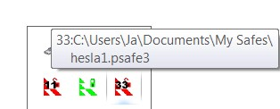

Kontextová ponuka aplikácie v System Tray poskytuje rýchly prístup k naposledy použitým databázam (ak je databáza odomknutá) a možnosť odomknutia databázy ak je uzamknutá.
Môžete ju tiež použiť na minimalizovanie hlavného okna Password Safe a jeho obnovenie, ak už bolo minimalizované ale nie uzamknuté.
Nastaviť ID databázy
Ak pravidelne mávate otvorených niekoľko databáz, môžete nastaviť jedinečné dočasné ID (číslo medzi 1 a 99),
ktoré sa zobrazí nad ikonou v System Tray. Nastavením ID na nulu sa toto číslo z obrázka odstráni.
ID je rezervované po priradení k otvorenej databáze, ale bude ho možné znova použiť buď po priradení nového ID,
alebo po zatvorení databázy. Okrem toho sa v popise ikony v System Tray zobrazuje ID pred názvom databázy.
Poznámky:
ID je iba vizuálny indikátor. Password Safe ho nijako neukladá ani nepoužíva.
ID je možné priradiť iba k otvorenej databáze. Keď je databáza zatvorená, ID sa dá priradiť k inej otvorenej databáze.
Rovnaké ID nemožno priradiť k dvom otvoreným databázam súčasne.
ID je možné zmeniť iba vtedy, keď je databáza odomknutá.
Priradenie ID ku konkrétnej databáze nie je trvalé (zapamätané), to znamená že ho musíte znova priradiť pri každom otvorení databázy.
Keďže farba panela úloh a oblasti oznámení systému Windows sa líši v závislosti od verzie Windows, môžete nastaviť farbu textu pre dosiahnutie najlepšieho kontrastu vo vašom systéme.
Ak je databáza uzamknutá, názov databázy sa zobrazí v popise medzi hranatými zátvorkami, ako je znázornené nižšie.

Otvoriť inú
Toto vám umožňuje vybrať inú databázu, ktorá sa má otvoriť namiesto tej, ktorá je momentálne otvorená (alebo uzamknutá) v aktuálnej inštancii programu.
Toto je užitočné, ak chcete prepínať medzi databázami bez spustenia inej inštancie programu.